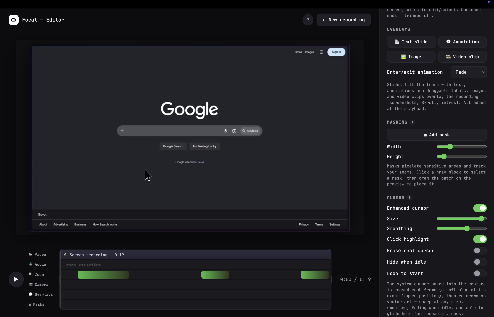

Focal records your screen and automatically zooms in on your clicks — no manual keyframing, no editing skills required. Just record, and it looks produced.
Focal handles the parts that usually take an editor — you just record.
Focal tracks your clicks while recording and generates smooth zoom-in moments around them — no manual keyframing. Every block is still fully editable afterward.
The system cursor is excluded at the recording level, not just blurred over, then redrawn as a crisp vector cursor from tracked mouse data — sharp at any zoom.
Don't record your whole screen — drag out exactly the region you want before you start, down to the pixel.
Add a webcam bubble and narrate over your recording. Voice enhancement cleans up the audio automatically on export.
Pixelate passwords, emails, or anything else you don't want visible — masks track your zooms automatically.
Trim, cut sections, add text slides and annotations, drop in B-roll, then style the frame — background, padding, corner radius, shadow.
Three steps, no timeline scrubbing required to get something worth sending.
Choose exactly what to record — an entire display, a single window, or a cropped region you drag out yourself.
Focal minimizes out of the way. Talk, click, work — every click is quietly logged to drive the zoom later.
Zoom moments are generated automatically. Trim, add a few annotations if you want, then export or copy a shareable link.

Still actively building. Here's what's on deck.
Pick from a set of vector cursor styles instead of the one default arrow — swap the look without touching your footage.
Automatic transcription with editable, styled captions burned in or exported as a separate file.
Automatically trim dead air and "um"s from your narration — reviewable before it's applied, not a black box.
The same OS-level cursor hiding and custom-area recording Mac gets today, brought to Windows.
Start a recording on one machine, keep editing on another — projects follow you.
Presets for common formats — bug report, quick tutorial, changelog — that set up styling and pacing for you.
Pick your platform below.
Focal isn't code-signed by an registered developer yet, so both operating systems will warn you on first launch. On Mac: right-click the app → Open. On Windows: click "More info" → "Run anyway" in the SmartScreen prompt.